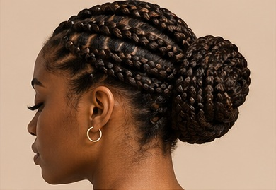

Protect Your Hair
Why Hair Protection Matters
Hair can become damaged from too much heat, rough brushing, and tight hairstyles.
Small changes in your routine can help reduce breakage and keep your hair looking healthier.
Protect your hair with simple everyday habits.
Daily habits can affect your hair's health. Gentle styling, reducing heat exposure, and avoiding tight hairstyles can help protect your hair from unnecessary damage.

Protect Your Hair
Hair can become damaged from too much heat, rough brushing, and tight hairstyles.
Small changes in your routine can help reduce breakage and keep your hair looking healthier.
Here are three simple ways to protect your hair from everyday damage.
Choose loose braids instead of tight hairstyles that pull on your hair.
Try to reduce the use of straighteners and curling irons.
Brush carefully and avoid pulling too hard when removing tangles.
A simple routine can make hair care easier. You do not need expensive products or complicated treatments.
Remember:Small changes in your daily routine can help protect your hair.
Your Hair Matters
Taking care of your hair does not have to be complicated. Start with simple daily habits.
Explore Our Guide